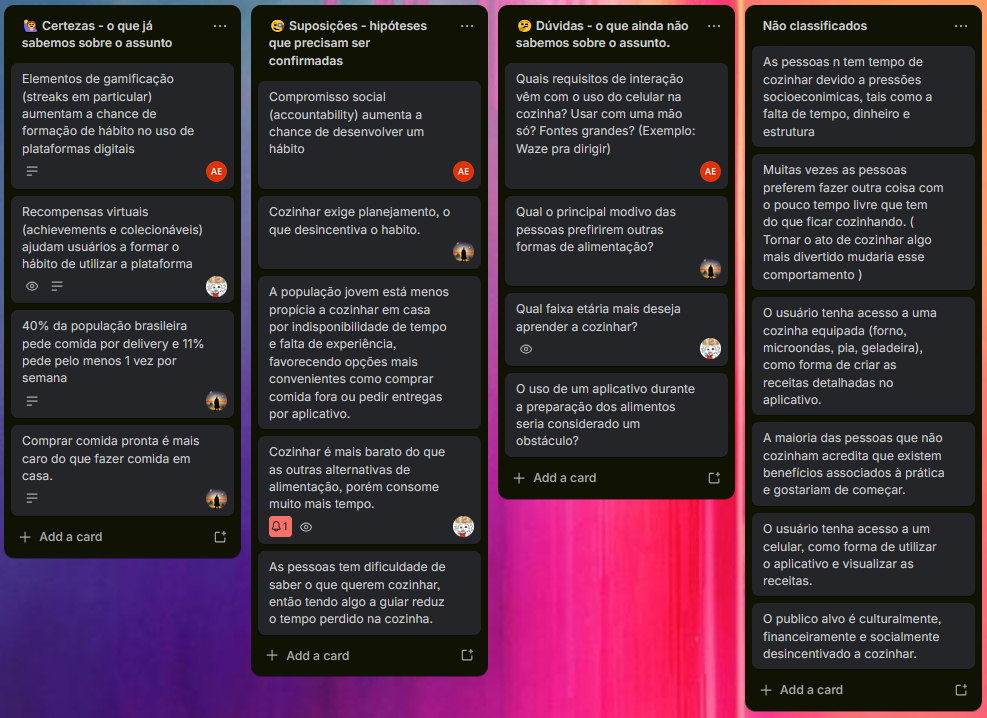

Fontes:
- ¹: APA PsycNet
- ⁶: The habit-building research behind your Duolingo streak
- ²: Designing A Streak System: The UX And Psychology Of Streaks
- ³: How to Use the Zeigarnik Effect in UX
- ⁴: Geração Z é a que mais pede comida via delivery; fast-food lidera preferências
- ⁵: Cozinhar em casa ou pedir comida fora: qual escolha pesa mais no bolso?
Créditos: Arthur Erthal, Dawson Monteiro, Luan Lopes, Lucas Coutinho